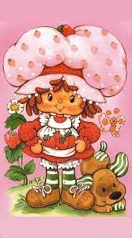
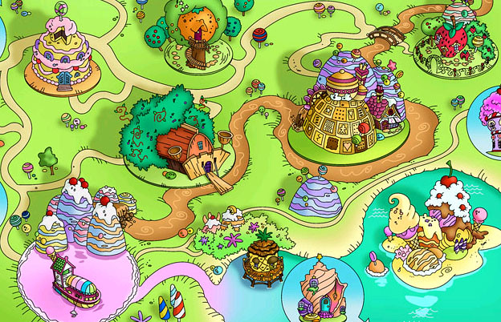

Strawberry Shortcake is a kind and creative girl who lives in Strawberryland. She’s known for her delicious baking, strong friendships, and cheerful attitude.
Strawberry Shortcake has been featured in various TV shows, cartoons, and movies since the 1980s.
Strawberry Shortcake is never alone in Strawberryland! She’s surrounded by lovable friends like Blueberry Muffin, Raspberry Torte, and Lemon Meringue. Together, they go on magical adventures and solve problems with kindness and teamwork.
When she’s not baking berry-tastic treats, Strawberry Shortcake loves gardening, singing, and organizing berry fun parties. She believes every day is better with a smile and a sprinkle of sweetness!
Did you know? The scent of the original Strawberry Shortcake dolls matched their names — Strawberry Shortcake actually smelled like strawberries!
Stay tuned for more sweet updates, vintage collectibles, and fun activities inspired by Strawberryland!
Strawberry Shortcake was originally created in 1977 by Muriel Fahrion, an illustrator working for American Greetings. What began as a simple greeting card character quickly blossomed into a beloved franchise featuring dolls, cartoons, books, and more. Muriel Fahrion gave Strawberry her signature look: red hair, freckles, a big bonnet, and of course, her strawberry-themed dress. Fahrion also designed many of Strawberry’s friends, helping shape the colorful world of Strawberryland. The character's early popularity led to a successful toy line produced by Kenner and a series of animated specials in the 1980s that many fans still cherish today.
Strawberryland